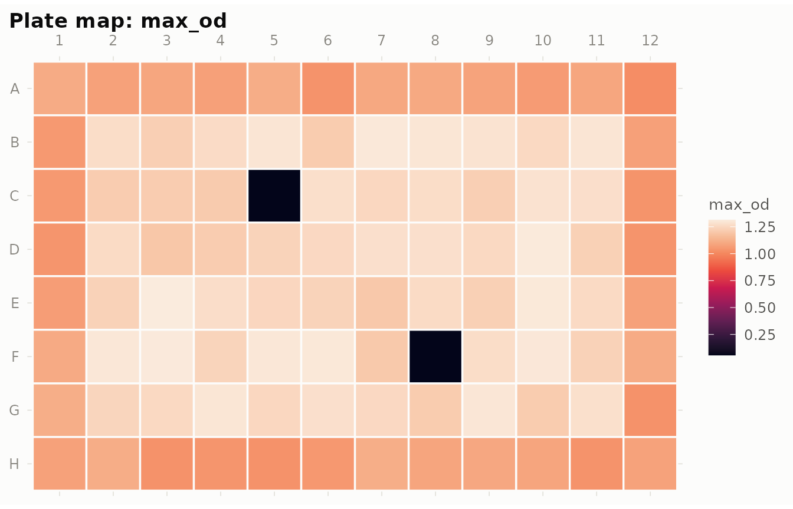
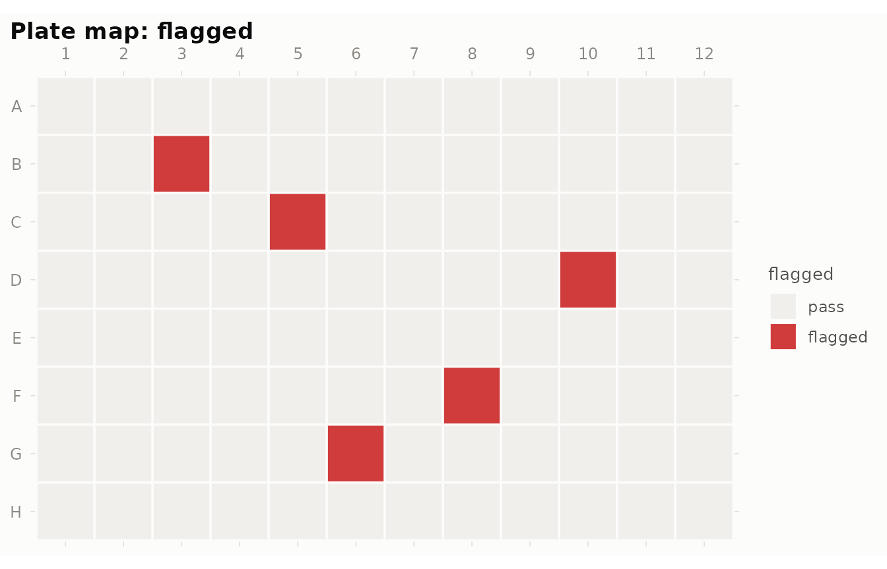
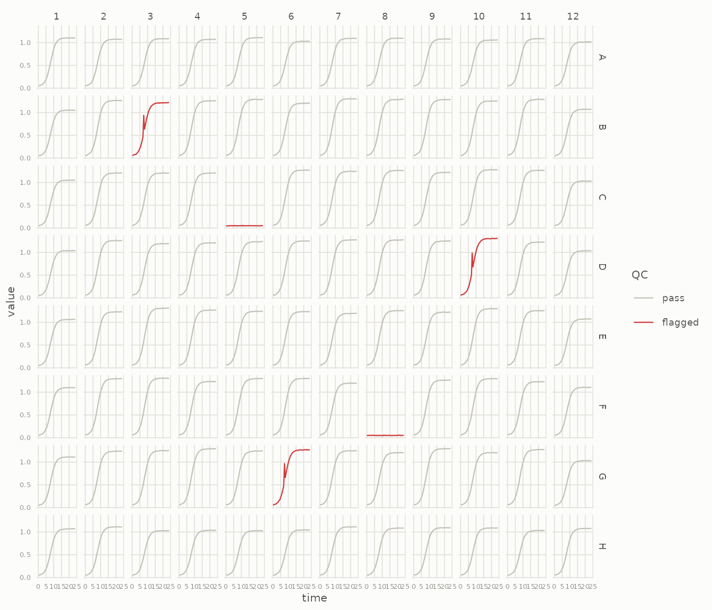
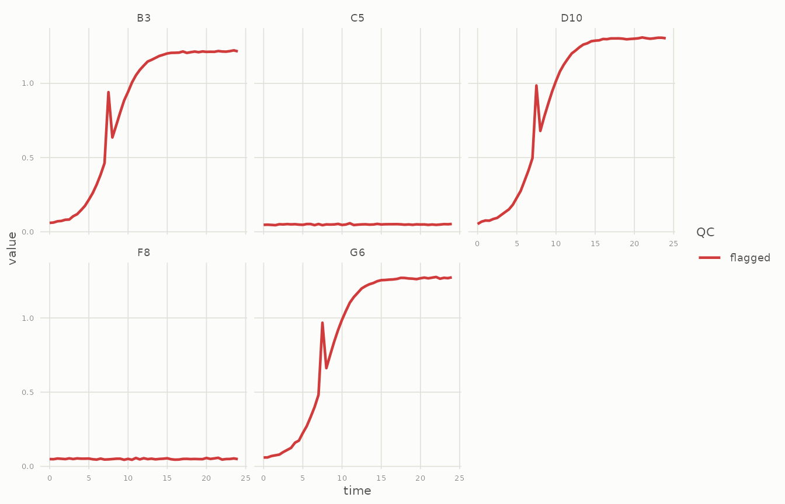
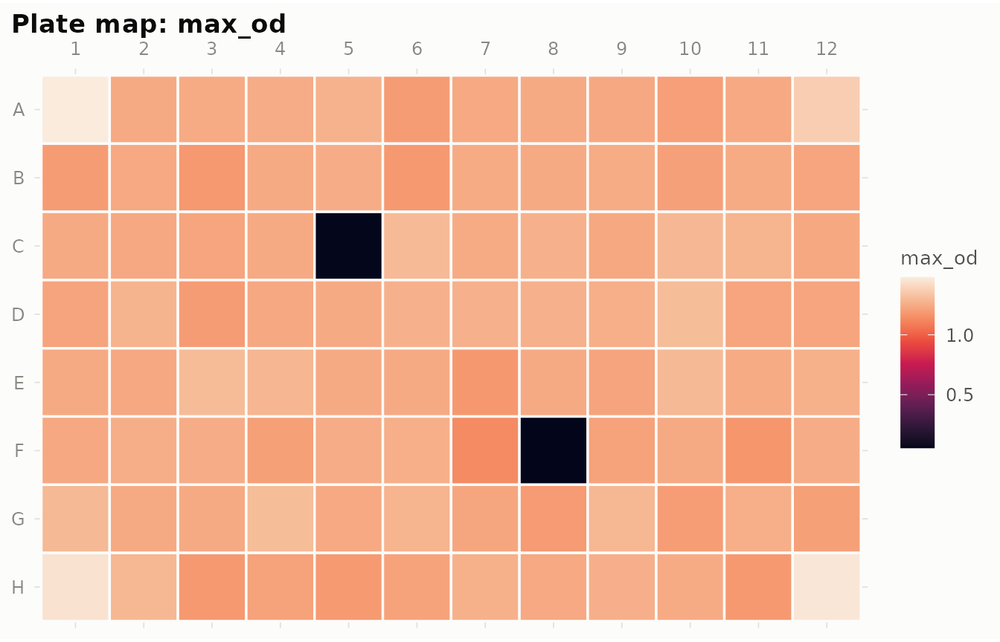
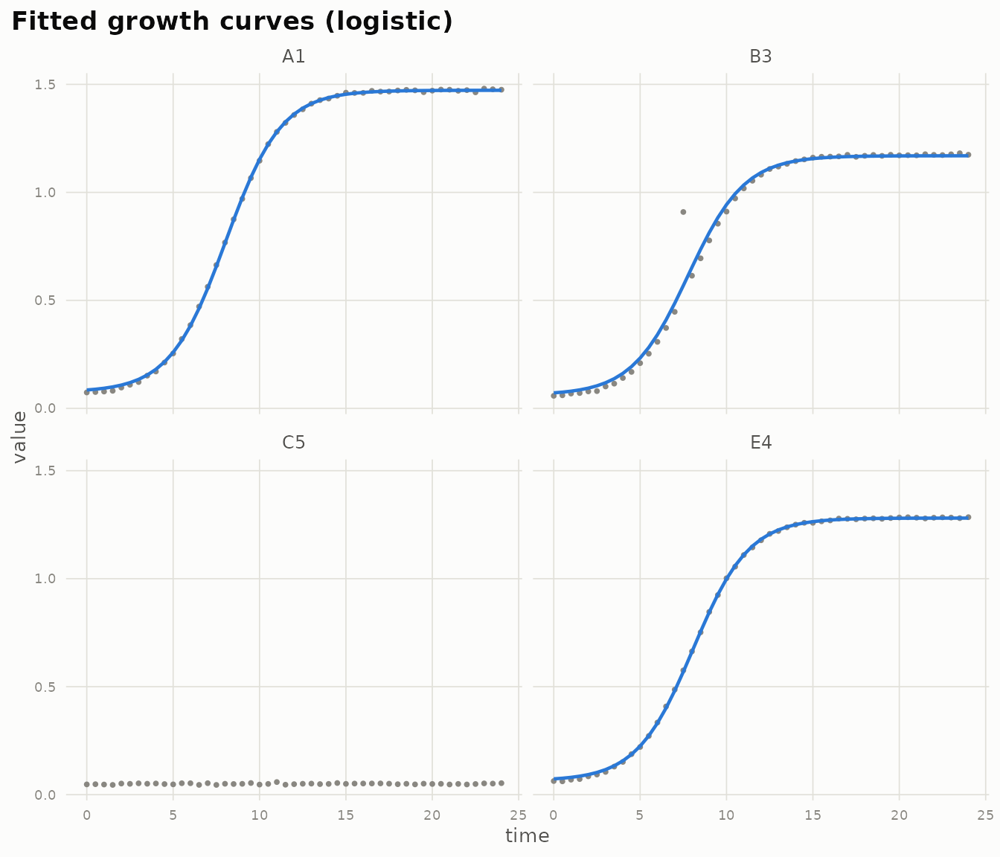
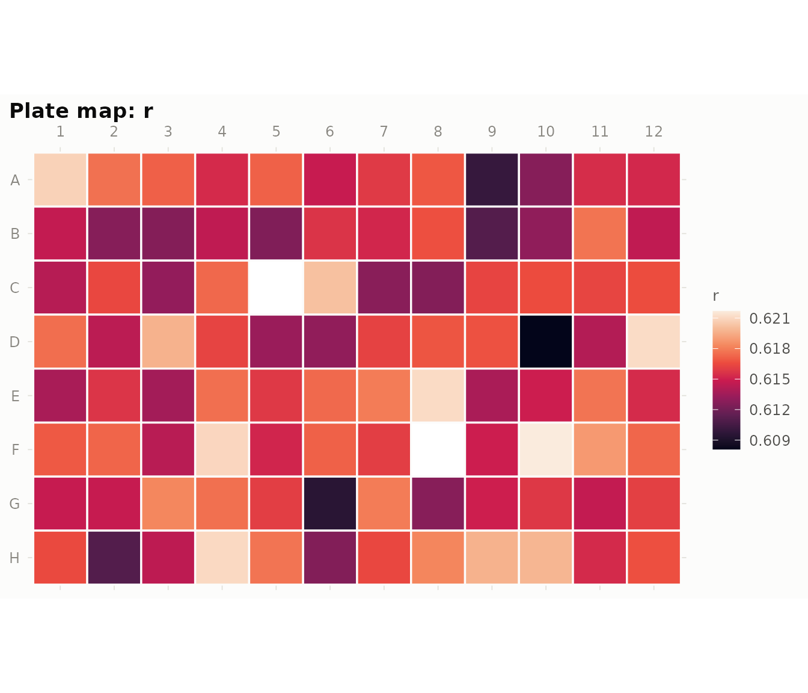
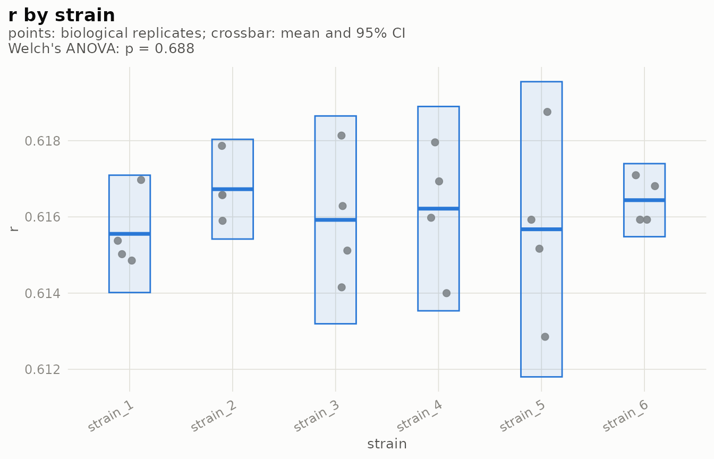

gRate takes you from a raw 96-well plate reader export to growth
parameters you can trust. It reads the export, maps the plate layout,
flags problematic wells, corrects spatial artifacts, fits growth models
(parametric logistic or nonparametric “easylinear”), and summarises
parameters across replicates. Prefer growthcurver or gcplyr for the
fitting? gr_export() hands them clean, QC’d data
instead.
The whole pipeline is six verbs on one object:
gr_read("run1.csv") |>
gr_layout("layout.csv") |>
gr_qc() |>
gr_spatial() |>
gr_fit() |>
gr_fit_summary()This vignette walks through each step using the example data bundled with the package: a synthetic 24-hour OD600 run with realistic problems baked in — two dead wells, three wells with single-read spikes, and a multiplicative edge effect.
1. Read
gr_read() accepts the two generic layouts plate reader
software exports: wide (a time column plus one column
per well) and long (well / time / value columns). The
layout is auto-detected; well names like A01 are normalised
to A1, and HH:MM:SS times are converted to
hours.
raw <- system.file("extdata", "growth_wide.csv", package = "gRate")
plate <- gr_read(raw)
plate
#> <gr_plate> 96 wells x 49 timepoints
#> time: 0 to 24 (interval 0.5)
#> instrument: generic, plate: growth_wide
#> QC: not run (use gr_qc())Everything lives in a single gr_plate object:
$data (tidy tibble), $qc (per-well flags, once
QC has run), and $meta.
head(plate$data)
#> # A tibble: 6 × 5
#> well row col time value
#> <chr> <chr> <int> <dbl> <dbl>
#> 1 A1 A 1 0 0.0551
#> 2 A1 A 1 0.5 0.0566
#> 3 A1 A 1 1 0.0583
#> 4 A1 A 1 1.5 0.0608
#> 5 A1 A 1 2 0.0721
#> 6 A1 A 1 2.5 0.08182. Layout
gr_layout() joins your experimental design onto the
wells. The recommended format is a long table with a well
column plus any metadata columns; an 8 × 12 grid mirroring the physical
plate also works for one variable at a time.
layout <- system.file("extdata", "layout_long.csv", package = "gRate")
plate <- gr_layout(plate, layout)
head(plate$data)
#> # A tibble: 6 × 9
#> well row col time value strain medium bio_rep tech_rep
#> <chr> <chr> <int> <dbl> <dbl> <chr> <chr> <int> <int>
#> 1 A1 A 1 0 0.0551 strain_1 LB 1 1
#> 2 A1 A 1 0.5 0.0566 strain_1 LB 1 1
#> 3 A1 A 1 1 0.0583 strain_1 LB 1 1
#> 4 A1 A 1 1.5 0.0608 strain_1 LB 1 1
#> 5 A1 A 1 2 0.0721 strain_1 LB 1 1
#> 6 A1 A 1 2.5 0.0818 strain_1 LB 1 1Biological and technical replicates
Two metadata columns are treated specially: bio_rep
(independent cultures) and tech_rep (the same culture in
several wells). Columns already named that way — as in the example
layout — are picked up automatically; otherwise point the
bio_rep / tech_rep arguments at your own
column names:
gr_layout(plate, "layout.csv", bio_rep = "biol_replicate", tech_rep = "tech")Once designated, the replicate structure shows up in the print summary and technical replicates can be averaged at export time (below).
plate
#> <gr_plate> 96 wells x 49 timepoints
#> time: 0 to 24 (interval 0.5)
#> instrument: generic, plate: growth_wide
#> metadata: strain, medium, bio_rep, tech_rep
#> replicates: 4 biological x 2 technical
#> QC: not run (use gr_qc())3. Quality control
gr_qc() flags wells that would corrupt downstream fits:
no_growth, spike, drift,
late_jump, and noisy. Every threshold is an
argument with a sensible default. Flags never delete data — you decide
later what to drop.
plate <- gr_qc(plate)
plate
#> <gr_plate> 96 wells x 49 timepoints
#> time: 0 to 24 (interval 0.5)
#> instrument: generic, plate: growth_wide
#> metadata: strain, medium, bio_rep, tech_rep
#> replicates: 4 biological x 2 technical
#> QC: 5 flagged wells (no_growth: 2, spike: 3)
subset(plate$qc, flagged)
#> # A tibble: 5 × 10
#> well row col no_growth spike drift late_jump noisy flagged reasons
#> <chr> <chr> <int> <lgl> <lgl> <lgl> <lgl> <lgl> <lgl> <chr>
#> 1 B3 B 3 FALSE TRUE FALSE FALSE FALSE TRUE spike
#> 2 C5 C 5 TRUE FALSE FALSE FALSE FALSE TRUE no_growth
#> 3 D10 D 10 FALSE TRUE FALSE FALSE FALSE TRUE spike
#> 4 F8 F 8 TRUE FALSE FALSE FALSE FALSE TRUE no_growth
#> 5 G6 G 6 FALSE TRUE FALSE FALSE FALSE TRUE spikeThe two plotting functions make the QC results easy to eyeball. The plate heatmap shows any statistic or flag in its physical position:
gr_plot_plate(plate, "max_od")
gr_plot_plate(plate, "flagged")
Notice the dimmer outer ring in the max_od map — that is
the edge effect we will deal with next. The curve view highlights
flagged wells in orange:
gr_plot_curves(plate)
Zoom in on the flagged wells to see why they were caught:
gr_plot_curves(plate, wells = subset(plate$qc, flagged)$well)
4. Spatial correction (experimental)
Edge wells often read lower — evaporation and temperature gradients
are the usual suspects. gr_spatial() estimates row and
column effects on a per-well summary statistic (max OD by default) using
Tukey’s median polish, then divides each curve by its estimated bias
factor. Flagged wells are excluded from the estimation but still receive
the correction.
plate <- gr_spatial(plate)
round(plate$spatial$row_effects, 3)
#> A B C D E F G H
#> 0.875 1.032 0.989 0.996 1.004 1.043 1.007 0.869
round(plate$spatial$col_effects, 3)
#> 1 2 3 4 5 6 7 8 9 10 11 12
#> 0.856 0.992 1.003 0.984 1.000 0.992 1.013 1.012 1.000 1.005 1.007 0.850Rows A and H and columns 1 and 12 sit well below 1 — the edge effect — while the interior is essentially unbiased. After correction the plate map is flat:
gr_plot_plate(plate, "max_od")
Treat this step as a diagnostic aid: median polish captures
row/column trends (corner wells are corrected twice over), and no
correction rescues a design that confounds treatment with plate
position. Randomise your layouts. The uncorrected values remain in
plate$data$value_raw, and correct = FALSE
estimates the effects without touching the data.
5. Fit growth models
gr_fit() estimates growth parameters per well, QC-aware
and on the spatially corrected values:
-
method = "logistic"(default) — parametricnlsfit of the logistic model: growth rater, carrying capacityK, initial densityN0, tangent lag time, doubling time. -
method = "gompertz"— parametric Gompertz fit, for curves with a long deceleration phase. Its rate constant lives on a different scale from the logisticr, so compare strains within one method. -
method = "compare"— fits logistic and Gompertz to every well and keeps the lower-AIC model, reporting the winner (model), both AICs, and the margin (delta_aic). Honest model selection: a smalldelta_aicmeans the data cannot really tell the models apart. -
method = "easylinear"— nonparametric, after Hall et al. (2014): rolling regressions on log OD; the steepest window passing an R² filter gives the maximum per-capita growth rate. Use it when curves are not logistic.
Wells that cannot be fitted (the dead wells here) get
fit_ok = FALSE and a note — never an error,
and never silently dropped.
Want uncertainty on the estimates? boot = 200 resamples
the residuals and refits per well, adding percentile confidence
intervals (r_lo/r_hi, and
K_lo/K_hi for the logistic method) to the fit
table and to gr_results(). It takes a minute for a full
plate, so it is off by default:
plate <- gr_fit(plate, boot = 200)
gr_results(plate, params = c("r", "K")) # now includes r_lo, r_hi, K_lo, K_hi
plate <- gr_fit(plate)
plate
#> <gr_plate> 96 wells x 49 timepoints
#> time: 0 to 24 (interval 0.5)
#> instrument: generic, plate: growth_wide
#> metadata: strain, medium, bio_rep, tech_rep
#> replicates: 4 biological x 2 technical
#> QC: 5 flagged wells (no_growth: 2, spike: 3)
#> spatial: corrected (stat: max_od)
#> fit: logistic (94/96 wells), median r = 0.616
head(plate$fit)
#> # A tibble: 6 × 17
#> well row col model r K N0 lag t_rmax doubling_time sigma
#> <chr> <chr> <int> <chr> <dbl> <dbl> <dbl> <dbl> <dbl> <dbl> <dbl>
#> 1 A1 A 1 logi… 0.621 1.40 0.00941 4.82 8.04 1.12 0.00683
#> 2 A2 A 2 logi… 0.618 1.17 0.00809 4.81 8.05 1.12 0.00552
#> 3 A3 A 3 logi… 0.617 1.17 0.00811 4.81 8.05 1.12 0.00545
#> 4 A4 A 4 logi… 0.615 1.18 0.00837 4.79 8.04 1.13 0.00477
#> 5 A5 A 5 logi… 0.617 1.21 0.00830 4.82 8.06 1.12 0.00556
#> 6 A6 A 6 logi… 0.615 1.13 0.00794 4.79 8.05 1.13 0.00523
#> # ℹ 6 more variables: r_lo <dbl>, r_hi <dbl>, K_lo <dbl>, K_hi <dbl>,
#> # fit_ok <lgl>, note <chr>Overlay the fits on the data to judge them by eye, and map any parameter back onto the plate:
gr_plot_fit(plate, wells = c("A1", "B3", "C5", "E4"))
gr_plot_plate(plate, "r")
Multi-phase growth (diauxie)
gr_diauxie() scans every well for multiple growth phases
— the diauxic shift when a culture switches carbon sources. Distinct
phases appear as separate peaks in the rolling per-capita growth rate
profile with a genuine trough between them; each phase gets its own rate
and time.
dx <- gr_diauxie(plate)
table(dx$diauxic, useNA = "ifany")
#>
#> FALSE <NA>
#> 94 2(No diauxie in this example data — single logistic curves, as detected.)
Lag time, honestly
Lag is the most method-dependent growth parameter there is.
gr_lag() computes it four ways per well — logistic tangent,
Gompertz tangent, easylinear tangent, and a simple threshold crossing —
and reports how much they agree. A well where the definitions disagree
wildly usually has a curve shape that violates somebody’s assumptions;
look at it before quoting a lag.
lags <- gr_lag(plate)
head(lags[c("well", "lag_logistic", "lag_gompertz", "lag_easylinear",
"lag_threshold", "lag_sd", "agree")])
#> # A tibble: 6 × 7
#> well lag_logistic lag_gompertz lag_easylinear lag_threshold lag_sd agree
#> <chr> <dbl> <dbl> <dbl> <dbl> <dbl> <lgl>
#> 1 A1 4.82 4.60 4.00 3.5 0.598 TRUE
#> 2 A2 4.81 4.59 4.00 3.5 0.591 TRUE
#> 3 A3 4.81 4.59 4.01 3.5 0.590 TRUE
#> 4 A4 4.79 4.57 4.00 3.5 0.580 TRUE
#> 5 A5 4.82 4.59 4.00 3.5 0.594 TRUE
#> 6 A6 4.79 4.57 4.01 3.5 0.582 TRUEThe results table
gr_results() is the table to carry into your analysis:
one row per well, with your metadata, the parameters you care about, and
the QC verdict side by side. Pick parameters with params,
drop flagged wells if you want only clean fits, or write it straight to
CSV with file.
gr_results(plate)
#> # A tibble: 96 × 15
#> well row col strain medium bio_rep tech_rep r K lag
#> <chr> <chr> <int> <chr> <chr> <int> <int> <dbl> <dbl> <dbl>
#> 1 A1 A 1 strain_1 LB 1 1 0.621 1.40 4.82
#> 2 A2 A 2 strain_1 LB 1 2 0.618 1.17 4.81
#> 3 A3 A 3 strain_2 LB 1 1 0.617 1.17 4.81
#> 4 A4 A 4 strain_2 LB 1 2 0.615 1.18 4.79
#> 5 A5 A 5 strain_3 LB 1 1 0.617 1.21 4.82
#> 6 A6 A 6 strain_3 LB 1 2 0.615 1.13 4.79
#> 7 A7 A 7 strain_4 LB 1 1 0.616 1.17 4.80
#> 8 A8 A 8 strain_4 LB 1 2 0.617 1.18 4.81
#> 9 A9 A 9 strain_5 LB 1 1 0.610 1.18 4.77
#> 10 A10 A 10 strain_5 LB 1 2 0.613 1.14 4.78
#> # ℹ 86 more rows
#> # ℹ 5 more variables: doubling_time <dbl>, fit_ok <lgl>, note <chr>,
#> # flagged <lgl>, reasons <chr>
gr_results(plate, params = c("r", "K"), drop_flagged = TRUE)
#> # A tibble: 91 × 11
#> well row col strain medium bio_rep tech_rep r K fit_ok note
#> <chr> <chr> <int> <chr> <chr> <int> <int> <dbl> <dbl> <lgl> <chr>
#> 1 A1 A 1 strain_1 LB 1 1 0.621 1.40 TRUE ""
#> 2 A2 A 2 strain_1 LB 1 2 0.618 1.17 TRUE ""
#> 3 A3 A 3 strain_2 LB 1 1 0.617 1.17 TRUE ""
#> 4 A4 A 4 strain_2 LB 1 2 0.615 1.18 TRUE ""
#> 5 A5 A 5 strain_3 LB 1 1 0.617 1.21 TRUE ""
#> 6 A6 A 6 strain_3 LB 1 2 0.615 1.13 TRUE ""
#> 7 A7 A 7 strain_4 LB 1 1 0.616 1.17 TRUE ""
#> 8 A8 A 8 strain_4 LB 1 2 0.617 1.18 TRUE ""
#> 9 A9 A 9 strain_5 LB 1 1 0.610 1.18 TRUE ""
#> 10 A10 A 10 strain_5 LB 1 2 0.613 1.14 TRUE ""
#> # ℹ 81 more rows
gr_results(plate, file = "run1_growth_parameters.csv")Summarise across replicates
gr_fit_summary() is the step most fitting tools leave to
you: it averages parameters over technical and biological replicates
after excluding flagged wells and failed fits. By default it
groups by every metadata column except the replicate identifiers; pass
by to group differently.
gr_fit_summary(plate)
#> # A tibble: 12 × 11
#> strain medium n_wells r_mean r_sd K_mean K_sd lag_mean lag_sd
#> <chr> <chr> <int> <dbl> <dbl> <dbl> <dbl> <dbl> <dbl>
#> 1 strain_1 LB 8 0.616 0.00258 1.20 0.0837 4.80 0.0241
#> 2 strain_1 M9 8 0.615 0.00203 1.21 0.0659 4.80 0.0163
#> 3 strain_2 LB 7 0.616 0.00215 1.16 0.0194 4.80 0.0155
#> 4 strain_2 M9 8 0.617 0.00292 1.18 0.0457 4.81 0.0179
#> 5 strain_3 LB 7 0.615 0.00273 1.18 0.0422 4.80 0.0159
#> 6 strain_3 M9 7 0.616 0.00177 1.17 0.0243 4.80 0.00631
#> 7 strain_4 LB 8 0.615 0.00176 1.18 0.0119 4.80 0.0144
#> 8 strain_4 M9 7 0.617 0.00257 1.14 0.0431 4.81 0.0154
#> 9 strain_5 LB 7 0.614 0.00279 1.18 0.0268 4.78 0.0233
#> 10 strain_5 M9 8 0.617 0.00296 1.18 0.0336 4.81 0.0219
#> 11 strain_6 LB 8 0.616 0.00224 1.18 0.0460 4.81 0.0171
#> 12 strain_6 M9 8 0.616 0.00141 1.19 0.0861 4.81 0.0148
#> # ℹ 2 more variables: doubling_time_mean <dbl>, doubling_time_sd <dbl>
gr_fit_summary(plate, by = c("strain", "medium", "bio_rep"))
#> # A tibble: 48 × 12
#> strain medium bio_rep n_wells r_mean r_sd K_mean K_sd lag_mean
#> <chr> <chr> <int> <int> <dbl> <dbl> <dbl> <dbl> <dbl>
#> 1 strain_1 LB 1 2 0.619 0.00226 1.28 0.159 4.81
#> 2 strain_1 LB 2 2 0.614 0.00137 1.15 0.0344 4.78
#> 3 strain_1 LB 3 2 0.615 0.00157 1.17 0.00844 4.79
#> 4 strain_1 LB 4 2 0.616 0.00222 1.18 0.0397 4.81
#> 5 strain_1 M9 1 2 0.615 0.00133 1.17 0.00420 4.80
#> 6 strain_1 M9 2 2 0.617 0.000230 1.18 0.0141 4.81
#> 7 strain_1 M9 3 2 0.615 0.0000216 1.20 0.0393 4.80
#> 8 strain_1 M9 4 2 0.614 0.00387 1.30 0.0942 4.79
#> 9 strain_2 LB 1 2 0.616 0.00127 1.18 0.00665 4.80
#> 10 strain_2 LB 2 1 0.615 NA 1.18 NA 4.78
#> # ℹ 38 more rows
#> # ℹ 3 more variables: lag_sd <dbl>, doubling_time_mean <dbl>,
#> # doubling_time_sd <dbl>Compare groups
gr_compare() tests whether a parameter differs between
strains or conditions — at the right unit of replication. Technical
replicates are averaged into their biological replicate before
any test, so wells never inflate the sample size. Two groups get a Welch
t-test, more get Welch’s ANOVA plus Holm-adjusted pairwise comparisons
(method = "kruskal" for the nonparametric versions).
cmp <- gr_compare(plate, what = "r", by = "strain")
cmp
#> <gr_compare> r by strain (unit: biological replicates)
#> Welch's ANOVA: statistic = 0.622, p = 0.688
#>
#> # A tibble: 6 × 7
#> group n mean sd se ci_lo ci_hi
#> <chr> <int> <dbl> <dbl> <dbl> <dbl> <dbl>
#> 1 strain_1 4 0.616 0.000968 0.000484 0.614 0.617
#> 2 strain_2 4 0.617 0.000822 0.000411 0.615 0.618
#> 3 strain_3 4 0.616 0.00171 0.000857 0.613 0.619
#> 4 strain_4 4 0.616 0.00168 0.000842 0.614 0.619
#> 5 strain_5 4 0.616 0.00243 0.00122 0.612 0.620
#> 6 strain_6 4 0.616 0.000603 0.000301 0.615 0.617
#>
#> 0 of 15 pairwise comparisons significant at 0.05 (Holm-adjusted); see $pairwise
gr_plot_compare(cmp)
(The bundled example data were generated with the same growth rate for every strain, so an honest test finds nothing — exactly as it should.)
6. Export
Prefer growthcurver or gcplyr as the fitting engine?
gr_export() returns plain data frames in the shape those
tools expect. drop_flagged = TRUE is the one place gRate
removes data — explicitly, at your request.
tidy <- gr_export(plate)
head(tidy)
#> # A tibble: 6 × 13
#> well row col time value strain medium bio_rep tech_rep value_raw fitted
#> <chr> <chr> <int> <dbl> <dbl> <chr> <chr> <int> <int> <dbl> <dbl>
#> 1 A1 A 1 0 0.0736 strai… LB 1 1 0.0551 0.0851
#> 2 A1 A 1 0.5 0.0756 strai… LB 1 1 0.0566 0.0885
#> 3 A1 A 1 1 0.0779 strai… LB 1 1 0.0583 0.0931
#> 4 A1 A 1 1.5 0.0812 strai… LB 1 1 0.0608 0.0993
#> 5 A1 A 1 2 0.0963 strai… LB 1 1 0.0721 0.108
#> 6 A1 A 1 2.5 0.109 strai… LB 1 1 0.0818 0.119
#> # ℹ 2 more variables: flagged <lgl>, reasons <chr>
gc_input <- as_growthcurver(plate, drop_flagged = TRUE)
gc_input[1:3, 1:5]
#> time A1 A2 A3 A4
#> 1 0.0 0.07357964 0.05954082 0.05994136 0.05596081
#> 2 0.5 0.07558271 0.05965598 0.06165071 0.06234638
#> 3 1.0 0.07785287 0.07117258 0.06563921 0.06246249The wide gc_input goes straight into growthcurver:
fits <- growthcurver::SummarizeGrowthByPlate(gc_input)
head(fits)
#> sample k n0 r t_mid t_gen auc_l auc_e
#> 1 A1 1.399199 0.009626434 0.6186575 8.037142 1.120405 22.31972 22.28238
#> 2 A2 1.176944 0.008506315 0.6128762 8.031987 1.130974 18.77963 18.75464
#> 3 A3 1.177283 0.008370350 0.6141434 8.042313 1.128641 18.77314 18.74734
#> 4 A4 1.188690 0.008839847 0.6101798 8.020380 1.135972 18.98039 18.96183
#> 5 A5 1.209920 0.008775195 0.6118531 8.039678 1.132865 19.29644 19.27303
#> 6 A6 1.127635 0.008140152 0.6123885 8.040360 1.131875 17.98341 17.95740
#> sigma note
#> 1 0.006252850
#> 2 0.004431350
#> 3 0.004788188
#> 4 0.003635328
#> 5 0.004379034
#> 6 0.004737243For gcplyr, as_gcplyr() produces the long
Well / Time / Measurements shape
(metadata columns included).
head(as_gcplyr(plate, drop_flagged = TRUE))
#> Well Time Measurements strain medium bio_rep tech_rep fitted
#> 1 A1 0.0 0.07357964 strain_1 LB 1 1 0.08508294
#> 2 A1 0.5 0.07558271 strain_1 LB 1 1 0.08847685
#> 3 A1 1.0 0.07785287 strain_1 LB 1 1 0.09307935
#> 4 A1 1.5 0.08119133 strain_1 LB 1 1 0.09930785
#> 5 A1 2.0 0.09628116 strain_1 LB 1 1 0.10771316
#> 6 A1 2.5 0.10923438 strain_1 LB 1 1 0.11901319Averaging technical replicates
With tech_rep designated,
collapse_tech = TRUE averages the wells of each technical
replicate group at every timepoint. Combined with
drop_flagged = TRUE, only clean wells enter the average;
otherwise flagged tells you when any contributing well was
suspect.
pooled <- gr_export(plate, collapse_tech = TRUE, drop_flagged = TRUE)
head(pooled)
#> # A tibble: 6 × 7
#> strain medium bio_rep time value n_wells flagged
#> <chr> <chr> <int> <dbl> <dbl> <int> <lgl>
#> 1 strain_1 LB 1 0 0.0666 2 FALSE
#> 2 strain_1 LB 1 0.5 0.0676 2 FALSE
#> 3 strain_1 LB 1 1 0.0745 2 FALSE
#> 4 strain_1 LB 1 1.5 0.0778 2 FALSE
#> 5 strain_1 LB 1 2 0.0886 2 FALSE
#> 6 strain_1 LB 1 2.5 0.101 2 FALSEOne-call Quarto report
gr_report(plate) renders the bundled Quarto
(.qmd) template into a standalone, self-contained HTML
report — plate maps, flagged wells with reasons, thresholds used,
curves, and spatial effects — for keeping alongside the raw export. It
needs the Quarto CLI (bundled with recent RStudio).
gr_report(plate, file = "run1_qc.html")With interactive = TRUE (requires the plotly and DT
packages), the plots become zoomable and hoverable — hover a curve to
see which well it is — and the per-well results table becomes searchable
and sortable:
gr_report(plate, file = "run1_qc.html", interactive = TRUE)